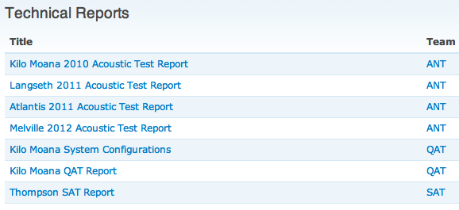

06.27.2012 11:18
Python packaging
I try hard to keep up with python
packaging. There is a lot I don't understand. Armin Ronacher's
recent post is well worth reading if you are a python programmer of
any level.
Python Packaging: Hate, hate, hate everywhere
This article covers pth files (which I never understood nor looked in), the setuptools egg directory structure, eggs (the zip format/jar work alike), binary eggs, pip, and lots of other bits and pieces.
Python Packaging: Hate, hate, hate everywhere
This article covers pth files (which I never understood nor looked in), the setuptools egg directory structure, eggs (the zip format/jar work alike), binary eggs, pip, and lots of other bits and pieces.
06.26.2012 14:38
gdal to geographic bounding box
This use case comes up a lot, so here
is a post to keep me from re-inventing the wheel. I have a spatial
file in some projection. I want get its bounding box in geographic.
There are lots of ways to do it, but I want to stay within
gdal/ogr/osr.
#!/usr/bin/env python
from osgeo import gdal, osr
bag = gdal.Open('F00574_MB_2m_MLLW_2of3.bag')
bag_gtrn = bag.GetGeoTransform()
bag_proj = bag.GetProjectionRef()
bag_srs = osr.SpatialReference(bag_proj)
geo_srs =bag_srs.CloneGeogCS()
transform = osr.CoordinateTransformation( bag_srs, geo_srs)
bag_bbox_cells = (
(0., 0.),
(0, bag.RasterYSize),
(bag.RasterXSize, bag.RasterYSize),
(bag.RasterXSize, 0),
)
geo_pts = []
for x, y in bag_bbox_cells:
x2 = bag_gtrn[0] + bag_gtrn[1] * x + bag_gtrn[2] * y
y2 = bag_gtrn[3] + bag_gtrn[4] * x + bag_gtrn[5] * y
geo_pt = transform.TransformPoint(x2, y2)[:2]
geo_pts.append(geo_pt)
print x, y, '->', x2, y2, '->', geo_pt
The results of this code are:
0.0 0.0 -> 369179.0 4775259.0 -> (-70.608087740520943, 43.118768822635147) 0.0 1083 -> 369179.0 4773093.0 -> (-70.607577288471774, 43.099271863165256) 1841 1083 -> 372861.0 4773093.0 -> (-70.56234820699548, 43.099898472783011) 1841 0.0 -> 372861.0 4775259.0 -> (-70.562844311963829, 43.119395856927362)I was looking at gdalinfo.py in the gdal source tree, but got hung up on the very different coding style. Thanks to EvenR, I now know that the b, psz, adf, h, etc prefixes on variable names are Hungarian notation. While I've heard of Hungarian notation, I've never really had to deal with it before. I have an easier time reading the above example. I hope this helps a few people.
06.26.2012 12:06
Detecting who done it when dumping oil
Back in 2007, Phil McGillivary and I
wrote an IEEE/MTS paper,
Marine Ship Automatic Identification System (AIS) for Enhanced
Coastal Security Capabilities: An Oil Spill Tracking
Application. Shortly after, I
linked to a
USCG note in MarineLink saying that the USCG had used NAIS to
figure out who spilled oil. Since then, there have been papers
talking about combining AIS and satellite imaging to catch
dumpers.
Last week, SkyTruth and SpaceQuest published a nice demonstration of doing exactly that:
Bilge Dumping? Busted Using Satellite Images and AIS Data [SkyTruth]
Bilge Dump CSI: AIS Helps ID Vessel Responsible for Oil Slick Off Angola [gCaptain]
It's nice to see a concept get one step closer to common practice.
Last week, SkyTruth and SpaceQuest published a nice demonstration of doing exactly that:
Bilge Dumping? Busted Using Satellite Images and AIS Data [SkyTruth]
Bilge Dump CSI: AIS Helps ID Vessel Responsible for Oil Slick Off Angola [gCaptain]
It's nice to see a concept get one step closer to common practice.
06.14.2012 19:39
Half day kickstart on AIS
I was just talking to a person who
works for federal agency who was looking for information on AIS.
Here is the list of material that I think gives a kickstart into
AIS. This is a very intense half day of material, but leaves out
actually processing any AIS data. I have yet to create an AIS in
practice video.
First 3 videos. Each is close to an hour.
My AIS Deepwater Horizon video: http://youtu.be/t5xfs7z2VJY
My AIS for Environmental Protection video: http://youtu.be/MQBj9tlcqU0
Michael Jones of Google talking about AIS and several other technologies in industry: http://youtu.be/Dk3IIOimGwE
After that, here are two pretty big documents:
My AIS for Deepwater Horizon paper: 2011-schwehr-ushydro-dwh.pdf
NOAA CSC BOEM AIS Data Handler presenation (cites me): http://www.marinecadastre.gov/AIS/AIS%20Documents/AISDataHandlerTutorial_DRAFT.pdf
I haven't posted this even though it has been online for just about a month, but here it is. Michael Jones of Google talking about what industry as a whole can and does do. Keep your eyes out as he shows a photo of the SpaceQuest crew with two of their AIS satellites.
First 3 videos. Each is close to an hour.
My AIS Deepwater Horizon video: http://youtu.be/t5xfs7z2VJY
My AIS for Environmental Protection video: http://youtu.be/MQBj9tlcqU0
Michael Jones of Google talking about AIS and several other technologies in industry: http://youtu.be/Dk3IIOimGwE
After that, here are two pretty big documents:
My AIS for Deepwater Horizon paper: 2011-schwehr-ushydro-dwh.pdf
NOAA CSC BOEM AIS Data Handler presenation (cites me): http://www.marinecadastre.gov/AIS/AIS%20Documents/AISDataHandlerTutorial_DRAFT.pdf
I haven't posted this even though it has been online for just about a month, but here it is. Michael Jones of Google talking about what industry as a whole can and does do. Keep your eyes out as he shows a photo of the SpaceQuest crew with two of their AIS satellites.
06.13.2012 12:01
RT Lecture 20 - From BAG to summary KML in Earth and QGIS
In this lecture, I'm really proud
that we went from a HDF5 BAG data file from a hydrographic survey
to a bounding box KML summary with Google Earth and in QGIS with
GSHHS shorelines for context.
06.12.2012 06:09
Research Tools Lecture 19 - plotting BAGs and parsing metadata
In this video, I plot the bathymetry,
a histogram of elevations, the uncertainty and a histogram of
uncertainty for a Bathymetry Attributed Grid (BAG) file. I also
show how to use h5py and lxml with xpath to beging to extract parts
of the ISO XML metadata.
06.06.2012 04:56
A little more puppet
I wanted to show how to install
something on Ubuntu in my first post on puppet, but it ended up
being just too much for one go. Here is installing one package on a
Ubuntu 10.04 LTS machine. I picked the cheetah python module at
random.
apt-cache search cheetah python-cheetah - text-based template engine and Python code generator moap - Swiss army knife for project maintainers and developers python-mako - fast and lightweight templating for the Python platform dpkg -l python-cheetah No packages found matching python-cheetah. # trying to install it puppet apply cheetah.pp err: /Stage[main]//Package[python-cheetah]/ensure: change from purged to present failed: Execution of '/usr/bin/apt-get -q -y -o DPkg::Options::=--force-confold install python-cheetah' returned 100: E: Could not open lock file /var/lib/dpkg/lock - open (13: Permission denied) E: Unable to lock the administration directory (/var/lib/dpkg/), are you root? notice: Finished catalog run in 0.23 seconds # It needs to be root to have permission to install sudo puppet apply cheetah.pp notice: /Stage[main]//Package[python-cheetah]/ensure: ensure changed 'purged' to 'present' notice: Finished catalog run in 6.78 seconds dpkg -l python-cheetah Desired=Unknown/Install/Remove/Purge/Hold | Status=Not/Inst/Cfg-files/Unpacked/Failed-cfg/Half-inst/trig-aWait/Trig-pend |/ Err?=(none)/Reinst-required (Status,Err: uppercase=bad) ||/ Name Version Description +++-============================-============================-======================================= ii python-cheetah 2.0.1-2ubuntu7 text-based template engine and Python code generatorHere is what the cheetah.pp file looks like:
package { "python-cheetah":
ensure => present,
}
Last time, I showed using an erb template. Here is running the ruby
erb command to see what it does to a template:
cat mytemplate.erb os: <%= operatingsystem %> erb -x mytemplate.erb _erbout = ''; _erbout.concat "os: "; _erbout.concat(( operatingsystem ).to_s); _erbout.concat "\n" ; _erboutI don't speak ruby, but this looks like it might be a ruby script.
06.05.2012 14:34
Multibeam advisory committee
I've been telling a lot of people
about this, but now it is public:
The Multibeam Advisory Committee (MAC) is a community-based effort with the goal of ensuring consistent high-quality multibeam data are collected across the U.S. Academic Research Fleet. Our strategy is to create a community of stakeholders to build a common body of knowledge and technical expertise to optimize multibeam data acquisition. Please visit http://mac.unols.org for: - Information about the MAC help-desk - Sound Velocity Profile (SVP) Editor Tools - Beta Sound Velocity Profile (SVP) Mission Planning Tools - Technical Reports - Software Cookbooks Following up from our presentation at the RVTEC meeting last November, we are currently gathering information and documentation, and invite you to contribute stories of technical successes, technical issues, and/or any documentation or protocols you may be willing to share. We look forward to working with you. Best wishes, Vicki Ferrini, Jonathan Beaudoin, and Paul Johnson

06.05.2012 07:47
Iceland
I saw Greenland for the first time
out the window of the plane...
Then I got to see the moon rise as we got close to Iceland:
Then I got an awesome midnight bus ride from the KEF airport to Reykjavik. This morning, I took a walk out to the area around Valhusahaeo.
Photosynths:
Then I got to see the moon rise as we got close to Iceland:
Then I got an awesome midnight bus ride from the KEF airport to Reykjavik. This morning, I took a walk out to the area around Valhusahaeo.
Photosynths:
06.02.2012 11:10
puppet hello world
I'm getting tired trying to maintain
too many machines across the globe. I'd like to have a way to make
sure that virtual and non-virtual machines meet the requirements
for what I'm going to do with them.
There are a number of use cases that I have in my mind:
This first is with my remake of my research tools Ubuntu 11.04 VMWare Fusion 3 vm that I used with the 2011 Research Tools course. While it did work okay for the class. It was hard to be sure that each students instance was the same as mine. I couldn't push changes to the students. They had to run 'sudo apt-get some-package' to install software that we needed, which is great for learning, but hard to keep momentum. If they had been able to use hg, git or svn to pull and updated puppet config and ask puppet to do the updating, I think it would have gone a lot faster.
My next use case is for my own use of many machines. My computing life spans 10's of mac and linux machines that I directly log into and many more that I count on. If I could make some basic modules of things, then I could say... "give me my programming environment" (e.g. emacs, yasnippets, python, and my favorite python modules). Or "this machine is a data logger" (seriously coders... I don't know the answer for this one. Tell me what this is). Or "I need to do GIS data processing" (give me qgis, gdal, shapely, pyproj). You get the idea.
Then there is the collaboration aspect. When a buddy needs to work with me, I can say "grab this puppet config" and it will get you there. Every system has it's own way to get going... e.g. yum/rpm vrs apt/deb vrs fink/deb vrs macports/? vrs homebrew/just don't look. And we have ruby gems, php pear, python distribute/pip/pypi/virtualenv, perl cpan, emacs 24+?, etc.
So, how to get myself started? I bought a book. It wasn't very good. Instead, I'm trying to do some simple hello world type stuff and bootstrap myself by doing.
First, I'm going to assume that you have puppet installed somehow (I'm not worrying about the puppet master today). I leave this to the reader to pick their way. On ubuntu "apt-get install puppet".
Make sure puppet is installed:
Can we do the equivalent of "touch" a file... this will create an empty file.
The next thing to try to do is put content into a file. We here add a mode to control the file permission bits and a content entry that will be exactly what is in the file.
What if we want to have the content change depending on system variables like the hostname? We can use the puppet templating system to fill in variables. Let's create a file with some variable filled in. Here is the "mytemplate.erb" file that I have in the same directory:
There are a number of use cases that I have in my mind:
This first is with my remake of my research tools Ubuntu 11.04 VMWare Fusion 3 vm that I used with the 2011 Research Tools course. While it did work okay for the class. It was hard to be sure that each students instance was the same as mine. I couldn't push changes to the students. They had to run 'sudo apt-get some-package' to install software that we needed, which is great for learning, but hard to keep momentum. If they had been able to use hg, git or svn to pull and updated puppet config and ask puppet to do the updating, I think it would have gone a lot faster.
My next use case is for my own use of many machines. My computing life spans 10's of mac and linux machines that I directly log into and many more that I count on. If I could make some basic modules of things, then I could say... "give me my programming environment" (e.g. emacs, yasnippets, python, and my favorite python modules). Or "this machine is a data logger" (seriously coders... I don't know the answer for this one. Tell me what this is). Or "I need to do GIS data processing" (give me qgis, gdal, shapely, pyproj). You get the idea.
Then there is the collaboration aspect. When a buddy needs to work with me, I can say "grab this puppet config" and it will get you there. Every system has it's own way to get going... e.g. yum/rpm vrs apt/deb vrs fink/deb vrs macports/? vrs homebrew/just don't look. And we have ruby gems, php pear, python distribute/pip/pypi/virtualenv, perl cpan, emacs 24+?, etc.
So, how to get myself started? I bought a book. It wasn't very good. Instead, I'm trying to do some simple hello world type stuff and bootstrap myself by doing.
First, I'm going to assume that you have puppet installed somehow (I'm not worrying about the puppet master today). I leave this to the reader to pick their way. On ubuntu "apt-get install puppet".
Make sure puppet is installed:
puppet --version 2.7.12 facter --puppet | egrep 'architecture|os_version|operatingsystem' architecture => x86_64 operatingsystem => Darwin operatingsystemrelease => 11.4.0 sp_os_version => Mac OS X 10.7.4 (11E53) puppet help ...Now that I know that puppet at least runs, time to write a hello world. I'm using emacs and telling it to treat the code as if it is ruby. Older versions were okay without the apply in the shebang line (#!).
#!/usr/bin/env puppet apply
# -*- ruby -*-
notice("hello world!")
Now run it:
# apply runs a .pp file puppet apply helloworld.pp notice: Scope(Class[main]): hello world! notice: Finished catalog run in 0.03 seconds chmod +x helloworld.pp ./helloworld.pp notice: Scope(Class[main]): hello world! notice: Finished catalog run in 0.02 secondsYup, we can do hello world.
Can we do the equivalent of "touch" a file... this will create an empty file.
#!/usr/bin/env puppet apply
# -*- ruby -*-
file { "a file":
path => "/tmp/aliastest",
ensure => file
}
ls -l /tmp/aliastest ls: /tmp/aliastest: No such file or directory ./file.pp Timed out seeking value for ipaddress Timed out seeking value for ipaddress Timed out seeking value for ipaddress warning: Could not retrieve fact ipaddress notice: /Stage[main]//File[a file]/ensure: created notice: Finished catalog run in 0.02 seconds ls -l /tmp/aliastest -rw-r--r-- 1 schwehr wheel 0 Jun 2 17:59 /tmp/aliastest ./file.pp Timed out seeking value for ipaddress Timed out seeking value for ipaddress Timed out seeking value for ipaddress warning: Could not retrieve fact ipaddress notice: Finished catalog run in 0.02 seconds ls -l /tmp/aliastest -rw-r--r-- 1 schwehr wheel 0 Jun 2 17:59 /tmp/aliastestSo that worked for creating a zero length file the first time and if the file already exists, it does not mess with an existing file.
The next thing to try to do is put content into a file. We here add a mode to control the file permission bits and a content entry that will be exactly what is in the file.
#!/usr/bin/env puppet apply
# -*- ruby -*-
file { 'helloworld.txt':
path => '/tmp/helloworld.txt',
mode => 644,
content => 'Hello world to a file.
',
}
Run it:
chmod +x helloworld-file.pp
./helloworld-file.pp
Timed out seeking value for ipaddress
Timed out seeking value for ipaddress
Timed out seeking value for ipaddress
warning: Could not retrieve fact ipaddress
notice: /Stage[main]//File[helloworld.txt]/ensure: defined content as '{md5}bb341d5ec467509b253683246617c8b3'
notice: Finished catalog run in 0.03 seconds
ls -l /tmp/helloworld.txt
-rw-r--r-- 1 schwehr wheel 23 Jun 2 18:13 /tmp/helloworld.txt
cat /tmp/helloworld.txt
Hello world to a file.
Slow and steady wins the race, right? This is a long ways from
giving us super powers over our systems.What if we want to have the content change depending on system variables like the hostname? We can use the puppet templating system to fill in variables. Let's create a file with some variable filled in. Here is the "mytemplate.erb" file that I have in the same directory:
os: <%= operatingsystem %>Now we need to create a puppet script that will use that template:
#!/usr/bin/env puppet apply
# -*- ruby -*-
file { 'helloworld-template.txt':
path => '/tmp/helloworld-template.txt',
mode => 644,
content => template("mytemplate.erb"),
}
Try it:
chmod +x helloworld-template.pp ./helloworld-template.pp a Timed out seeking value for ipaddress Timed out seeking value for ipaddress Timed out seeking value for ipaddress warning: Could not retrieve fact ipaddress Could not find template 'mytemplate.erb' at /Users/schwehr/Desktop/puppet/helloworld-template.pp:6 on node schwehr-macbookair.localRats! puppet is looking somewhere else. It took me a while to find out how to have puppet look in the current directory for the template:
puppet apply --templatedir=`pwd` helloworld-template.pp
Timed out seeking value for ipaddress
warning: Could not retrieve fact ipaddress
notice: /Stage[main]//File[helloworld-template.txt]/ensure: defined content as '{md5}2d97ba272f96c4d53d505981330e3338'
notice: Finished catalog run in 0.03 seconds
cat /tmp/helloworld-template.txt
os: Darwin
So there we have my not overly useful introduction to playing with
puppet.